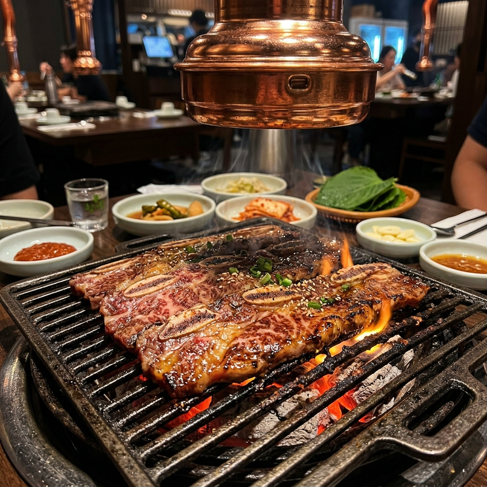

🏛️ 完美 VBP 最終章：Museum 1
在暢遊卡【VBP 壓線】也就是早上 09:00 時效截止的前夕，我們提早出門，趕在上午 11 點倒數失效前，優雅滑壘進入 Museum 1 現代美術館 美術館 看場極具聲光效果的投影藝術展，榨出 VBP 的最後價值。
💆♀️ 特殊任務：西面專屬保養時光
💡 醫療保養與防曬最高考驗
10:30 我們準時至西面的 Fillstox Clinic 醫美診所 報到。先生會陪同妻子進行院長術前諮詢，確認發數劑量無誤後，先生將轉身退出診所，留下妻子安心地敷麻藥準備施打。而接下來的行程，將全面為妻子啟動「全室內無日曬」的安全保護機制！
到了 12:00，為了不讓家人枯等挨餓，先生擔當大廚代買重任！帶著長輩與女兒直接進入涼爽的西面樂天百貨美食街 百貨美食街 先行用餐。此時清燉牛肉熱湯與滋滋作響的石鍋拌飯就是最棒的選擇。
14:00 等妻子療程完美結束後，夫妻倆再溫馨會合。點上兩份透心涼的「韓式水冷麵」或不冒煙的「紫菜包飯」作為安全午餐，嚴格防止術後因吃太熱而流汗發炎。
✨ [彈性外掛] 三井大樓 (Samjung Tower) 放電所
下午 15:00 若是 11 歲的女兒精力旺盛需要放電，那就全家轉往西面的超強娛樂中心「三井大樓 三井大樓地圖」。
爸爸可以直接牽著女兒上 10 樓的 Running Man 體驗館（若 VBP 實體卡還能當預先兌換券使用就賺到，不然現場購票也十分值得！）；同一時間，妻子與長輩可從容地停留在 8 樓以超大設計空間聞名的 Q Lounge 喝冰滴咖啡吃甜點，徹底耍廢。
🛍️ 地下商城的暢快購物與豪華烤肉
不用放電的話，全家就從 15:00 開始於西面地下街 地下街 一路連綿會合。這是一條長達數百公尺、毫無強光與冷風威脅的無敵購物長廊，無論是彩妝、服飾全部一網打盡。

傍晚 18:00 我們返回海雲台 烤肉商圈，為這次旅程點上最熱烈的營火 ——「海雲台優質韓式烤肉饗宴」。為了保護妻子保養後的臉頰，我們特意將美味分拆成兩爐，讓妻子坐在冷氣口遠離炭火高溫。一邊烤著媽媽最愛的高檔無調味牛排骨，另一邊則是滋滋作響的辣醬五花肉，開懷暢飲。